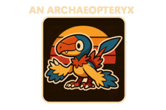
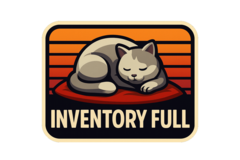

Anarchae finishes mopping up Divinity: Original Sin 2’s Wrecker’s Cove with more Deathfog, dead dwarves, and the usual inventory-management comedown.
Cliffski launches Ridiculous Space Battles into Early Access, reflects on hobby-dev freedom, and vents about the ugly toxicity that still dogs game releases.

Bhagpuss returns to Wuthering Waves on GeForce Now, then gets sidetracked by its surprisingly full-on school-life sim, Second Coming of Solaris: Unwritten Dreams.
 Wilhelm rounds up EVE Online’s quiet season with Deteriorated’s Alliance Tournament win and an October MER showing Crimson Harvest’s smaller-than-usual economic bump.
Tobold unboxes an absurdly lavish storage vault for The Elder Scrolls: Betrayal of the Second Era and cheerfully admits it’s pure whale behavior.
Ramen Junkie’s weekly wrap-up hops from Rings of Power and SWAT Exiles to Blokees, a Transformers Advent calendar, and a Batman Hush Catwoman kit.
WCRobinson shares a two-week India trip that nearly died at Heathrow over a visa error before turning into a photo-heavy family holiday.
Roger shares a Windows shortcut trick to open Discord straight to your chosen server and channel, skipping the app’s Quests page.
Bruce Schneier’s post veers into a comment-thread dive on logic, Gödel, Turing machines, and why computers can’t fully verify their own foundations.
Dave Winer spotlights new Markdown-powered sites and BonBon demos, with a little evangelism for lightweight publishing on the side.
Cristian admits he’s drifting back to Google Translate and other Big Tech services because they’re simply faster and easier than the alternatives.
Wilhelm rounds up EVE Online’s quiet season with Deteriorated’s Alliance Tournament win and an October MER showing Crimson Harvest’s smaller-than-usual economic bump.
Tobold unboxes an absurdly lavish storage vault for The Elder Scrolls: Betrayal of the Second Era and cheerfully admits it’s pure whale behavior.
Ramen Junkie’s weekly wrap-up hops from Rings of Power and SWAT Exiles to Blokees, a Transformers Advent calendar, and a Batman Hush Catwoman kit.
WCRobinson shares a two-week India trip that nearly died at Heathrow over a visa error before turning into a photo-heavy family holiday.
Roger shares a Windows shortcut trick to open Discord straight to your chosen server and channel, skipping the app’s Quests page.
Bruce Schneier’s post veers into a comment-thread dive on logic, Gödel, Turing machines, and why computers can’t fully verify their own foundations.
Dave Winer spotlights new Markdown-powered sites and BonBon demos, with a little evangelism for lightweight publishing on the side.
Cristian admits he’s drifting back to Google Translate and other Big Tech services because they’re simply faster and easier than the alternatives.
 Patrick pokes at what’s “hot” in indie RPGs, contrasting giant names like Daggerheart and Dungeon Crawler Carl with the small-press scene.
Patrick pokes at what’s “hot” in indie RPGs, contrasting giant names like Daggerheart and Dungeon Crawler Carl with the small-press scene.